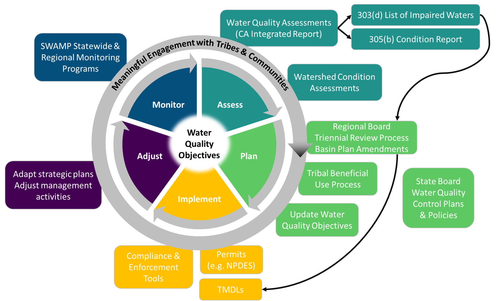

How are bioaccumulation data used to protect and restore water quality in CA?
Overview
The State Water Resources Control Board (State Water Board) and the nine Regional Water Quality Control Boards (Regional Water Boards), collectively known as the California Water Boards (Water Boards) have regulatory authority and responsibility for protecting the water quality of nearly 1.6 million acres of lakes, 1.3 million acres of bays and estuaries, 211,000 miles of rivers and streams, and about 1,100 miles of exquisite California coastline.
Data generated by the SWAMP Bioaccumulation Monitoring Program (Program), with guidance from the Safe to Eat Workgroup (STEW), are used to protect and restore California's waterbodies, and to provide statewide monitoring data and information that is used to:
Assess and contribute to the protection and restoration of fishing and aquatic life beneficial uses that are impacted by the bioaccumulation of pollutants in California’s waterbodies, and
Assess the human health risks associated with the consumption of contaminated fish and shellfish in California’s freshwater and coastal ecosystems, and use that information to support the development of advisories that would inform consumers of significant health risks associated with the consumption of particular species.
Here we use a cyclical adaptive management framework to illustrate how SWAMP bioaccumulation data are used to inform a number of Water Boards processes, including:
- California Water Quality Assessment & Integrated Report
- Update and implementation of State Board Water Quality Control Plans & Policies
- Update and implementation of Regional Board Water Quality Control Plans (Basin Plans)
- Development, revision, and implementation of Water Quality Goals & Objectives

(1) California Water Quality Assessment & Integrated Report
Under Section 303(d) of the Federal Clean Water Act, states, territories and authorized tribes, collectively referred to in the act as “states,” are required to report on the quality of its surface waters every two years and develop lists of impaired waters. The law requires that states establish priority rankings for waters on the lists and to take actions to improve water quality when it is impaired.
In California, the Surface Water Quality Assessment Program conducts an assessment of available data and reports on the quality of surface waters throughout the state every two years in the state's Integrated Report. This work is done in accordance with Section 303(d) of the Federal Clean Water Act and the Water Board's Listing Policy.
California’s Integrated Report includes two major components:
The 303(d) List of Impaired Waters - is a list of all water body segments that exceed protective water quality standards. Placing a waterbody on the 303(d) List initiates the development of a Total Maximum Daily Load (TMDL), which is a calculation of the maximum amount of a pollutant that can be present in a waterbody and still meet water quality standards. TMDL regulations are designed to improve water quality by controlling the amount of a pollutant entering a water body. In some cases other regulatory programs will address the impairment instead of a TMDL.
The 305(b) Condition Report - which uses data to evaluate the most common beneficial uses, such as drinking water supply or fish consumption, and assigns an Integrated Report Condition Category to all assessed waterbody segments.
All available SWAMP Bioaccumulation Monitoring Program data are used, in whole or in part, to categorize water bodies during each Integrated Report Cycle, which then informs the 303(d) List of Impaired Waters and corresponding TMDL or other regulatory programs, processes, and permits that are used to address water quality impairments.
In the 2020-2022 California Integrated Report, SWAMP Bioaccumulation Monitoring Program data were used to assess and categorize 5,173 water bodies throughout the state.
For more information and to see which water bodies have been listed, visit the interactive Integrated Report Map, which graphically displays the water bodies assessed in the current Integrated Report.
(2) Update and implementation of State Water Board Water Quality Control Plans & Policies
The State Water Board adopts statewide Water Quality Control Plans and Policies for Water Quality Control, which are then incorporated into each of the Regional Basin Plans. These Plans and Policies contain Water Quality Goals and corresponding Water Quality Objectives that apply statewide.
The Inland Surface Waters, Enclosed Bays, and Estuaries (ISWEBE) Plan is the most directly related to the SWAMP Bioaccumulation Monitoring Program. The Tribal Subsistence Beneficial Uses and Mercury Provisions (Part 2) and the Bacteria Provisions and Variance Policy (Part 3) are most directly and explicitly related to beneficial uses that are impacted by the bioaccumulation of pollutants in California's water bodies. These beneficial uses include: Commercial and Sport Fishing (COMM), Tribal Tradition and Culture (CUL), Tribal Subsistence Fishing (T-SUB), and Subsistence Fishing (SUB).
As mentioned in (1) above, the Water Board's Listing Policy dictates how SWAMP Bioaccumulation Monitoring Program data are used to add (or remove) a water body to the 303(d) List and the corresponding initiation of a TMDL or alternate regulatory program that is designed to address the impairment and improve water quality in a water body.
SWAMP Bioaccumulation Monitoring Program data were instrumental during the development of the Statewide Mercury Provisions (consisting of mercury water quality objectives and new beneficial use definitions), and will be used for any future updates. Similarly, any update to the Bacteria Provisions should include consideration of bioaccumulation data, as appropriate.
(3) Update and implementation of Regional Board Water Quality Control Plans (Basin Plans)
Each of the nine Regional Water Boards maintain their own Water Quality Control Plan, commonly referred to as "Basin Plan" since plans adopted by the Regional Water Boards cover one or more water basins. Basin Plans are the foundation for the Regional Water Boards' water quality regulatory programs and are regulatory references for meeting the state and federal requirements for water quality control. They provide a plan of actions designed to preserve and enhance water quality and require public participation. Each Regional Water Board Basin Plan contains:
- Beneficial use definitions;
- Designated beneficial uses for both surface and ground water bodies;
- Water Quality Objectives to protect those beneficial uses;
- Implementation plans that describe the actions necessary to achieve water quality objectives; and
- Descriptions of the surveillance and monitoring activities needed to determine regulatory compliance and assess the health of the water resources.
The Regional Water Boards review their Basin Plans every three years to determine and implement a list of priority planning projects by amending their respective Basin Plans (a process known as the "triennial review").
The most recent example of how SWAMP Bioaccumulation Monitoring Program data are being used in Regional Basin Plans is through each Region's Tribal Beneficial Use designation process. Each Regional Water Board is in a different stage of their Basin Plan Amendment processes to include the Tribal Beneficial Uses and designate surface waters. How each region plans to use SWAMP Bioaccumulation Monitoring Program data varies, but many regions are/will be using bioaccumulation data to inform water body designations as well as to amend or establish water quality objectives and implementation programs.
Regional Boards are also critical partners in that Region's SWAMP Bioaccumulation Monitoring Program Realignment cycle, and can leverage partnerships built, data collected, and lessons learned from the process to inform their work.
(4) Development, revision, and implementation of Water Quality Goals & Objectives
Water Quality Goals generally consist of
- Beneficial uses and their designated water bodies and
- The water quality objectives that are established to protect those beneficial uses.
Water Quality Objectives are at the core of all of California's water management programs, and provide a regulatory basis for water quality management activities authorized under the Federal Clean Water Act and Division 7 of the California Water Code, referred to as the Porter-Cologne Water Quality Control Act. Water Quality Objectives consist of numeric thresholds (i.e. limitations, levels, or concentrations) and/or narrative information that are established to protect those designated beneficial uses.
Related to (2) and (3) above, when a State or Regional Board amends Water Quality Control Plans, they are able to use those same processes to revise (or add new) water quality goals and corresponding objectives. For Regional Boards, this process usually takes place during the Region's Triennial Review or through a Basin Plan amendment. For more information on individual processes, we recommend contacting the Regional Board of interest.
If and when the Water Boards consider updating water quality goals or objectives (thresholds) in their statewide or regional Water Quality Control Plans, it is highly recommended that those revisions utilize SWAMP Bioaccumulation Monitoring Program data, and leverage the subject matter expertise concentrated in the STEW to inform those update decisions.
See the FAQ for more information about and definitions of Water Quality Goals, Water Quality Objectives, and related terms. Also see the FAQ for more information on current water quality objectives (thresholds) related to the safety of eating fish and shellfish in California.